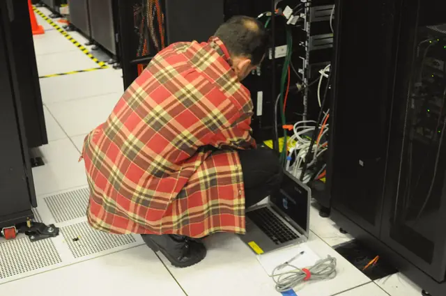

Services
What goes into the account, item by item
Pick a front to see what we do and what you get.
Backup
Automatic copy of files and email, stored off-site.
You get: a deleted file comes back in minutes, not days.
What is included
- Daily copy with 30 days of history
- Restore test every quarter
- A report of what was copied
Network and Wi-Fi
Internet that does not drop when the day is full.
You get: a one-page network map.
What is included
- Visit to tidy cables and label ports
- Separate guest network
- Alert when the internet goes down
Microsoft 365
Email, files and meetings on the company account, not a personal one.
You get: people who leave do not take the mailbox with them.
What is included
- Accounts created and removed the same day
- Two-step sign-in for everyone
- Migration from the old mailbox
Security
Continuous protection and a plan for when something goes wrong.
You get: knowing who to call and what to do in the first 15 minutes.
What is included
- Managed antivirus with alerts to a technician
- Updates on time, in an agreed window
- One-page incident response plan
On-site support
When you need someone in the room
Equipment install, cable swaps and tidying the network cabinet are done on a visit. The rest is remote.
The fictional brand covers on-site visits in Londrina and surroundings.

Photo: Derrick Coetzee, CC0
Want to know how your company IT is doing?
A free 45-minute assessment, no strings. You leave with a list of what to fix, even if you do not hire us.